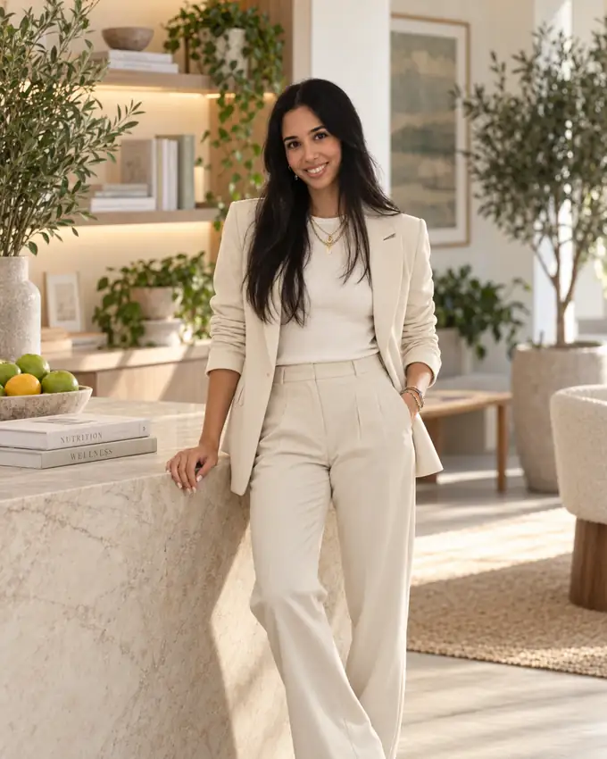
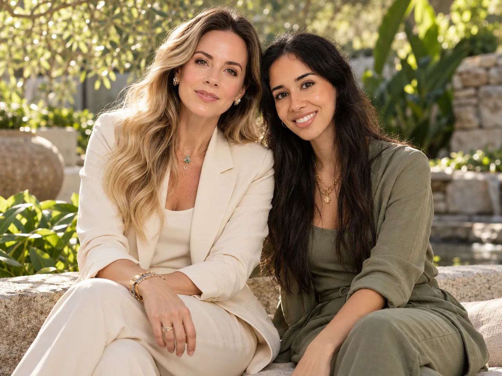

ROSELA MIRANDA · FORMACIÓNUna profesión.
Una profesión.
Una manera de mirar.
Licenciada en Nutrición · Universidad Autónoma de Guadalajara · 2016
La universidad fue el punto de partida de una visión que conecta conocimiento, escucha y decisiones informadas. Una formación que sigue dando sentido a mi trabajo con cada persona.


01 / PRÁCTICA PROFESIONALUna trayectoria
Una trayectoria
que trasciende ciudades.
De la experiencia presencial a la consulta a distancia: distintas ciudades y contextos, con la persona siempre al centro.
GuadalajaraMe formé como profesional y acompañé a miles de pacientes con el propósito de mejorar su salud y calidad de vida.
Baja CaliforniaContinué acompañando pacientes y construyendo relaciones de colaboración con especialistas de distintas disciplinas de la salud.
CDMX y Visión GlobalHe tenido el gusto de acompañar en línea a personas de distintos países y continentes en su búsqueda de bienestar.

02 / PRESENTE PROFESIONALEn Médica Lima,
En Médica Lima,
estoy para ayudarte.
Hoy formo parte de Médica Lima, en la Condesa, CDMX, donde colaboro con Cristina Lima para acompañar a nuestros pacientes desde la nutrición, con atención profesional y una mirada orientada al bienestar.
Conocer Médica Lima03 / CURRICULUM VITAE
Mi historia, en una página.Descarga mi CV.
Si quieres conocer mi formación y trayectoria a detalle, consulta mi CV en español o inglés.